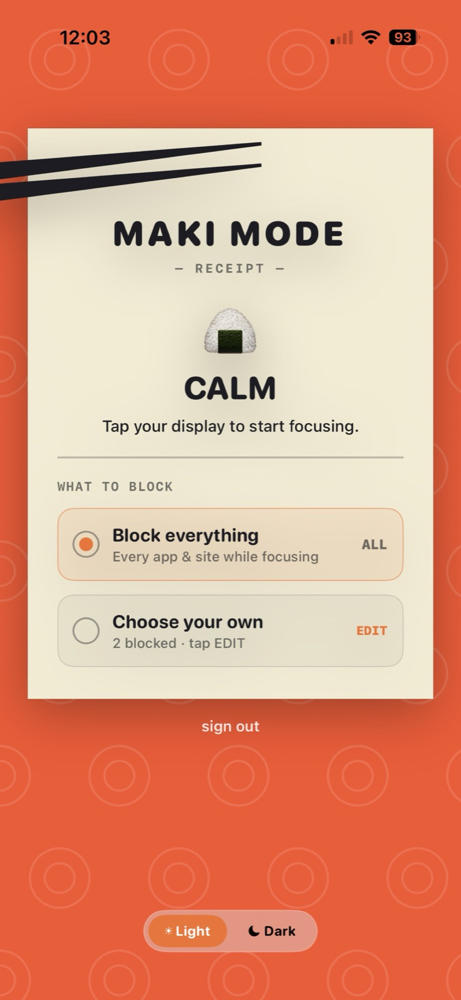

Tap the maki. Everything distracting goes quiet.
MakiMode is a little sushi roll for your desk. One tap, and your most distracting apps and sites go quiet on your Mac, your iPhone and your browser.



The whole product is one tap, and what happens around it.
No menus to open and no timer to set before you start. The tap on your desk switches every device you work on at once, and the face tells you, and the room, which mode you are in.
Calm
The maki waits on your desk. The app puts it plainly: tap your display to start focusing.
Tap
Your chosen apps and sites go quiet on your Mac, your iPhone and your browser, in sync.
Focus
The face shows the people around you that you are in focus, without you having to say a word.
Out
Tap again when you are done. On iPhone you hold to exit focus, so it is hard to cheat your way out.
Block everything, or choose your own.
You pick once in the app. After that, the tap does the rest on every device signed in to your account.
Why a tap on a maki beats the tools you tried.
Airplane mode and NFC tags both do one tap. Neither blocks websites on your laptop, and neither has a face.
| MakiMode | NFC blockers | Airplane mode | |
|---|---|---|---|
| One tap | ✓ | ✓ | ✓ |
| Blocks distracting apps | ✓ | ✓ | ✕ |
| Blocks distracting websites | ✓ | ✓ | ✕ |
| Hard to cheat your way out | ✓ | ✕ | ✕ |
| Syncs across Mac, iPhone and Windows | ✓ | ✕ | ✕ |
| A cute face that reacts to you | ✓ | ✕ | ✕ |
| Shows others you are in focus | ✓ | ✕ | ✕ |
Focusing in two minutes.
Pick your device and follow three short steps. The Mac and iPhone apps are free, and there is no subscription.
Mac
- Download the Mac app and drag it into Applications.
- Plug in your MakiMode with the USB-C cable and sign in.
- Add the browser helper for Chrome or Edge, then tap to focus.
iPhone
- Get the app on the App Store and sign in with your Mac account.
- Allow Screen Time, so MakiMode can block apps.
- Choose what to block, then tap your device to focus.
Windows
- Add the MakiMode extension and sign in.
- Plug in your MakiMode over USB-C and click Connect.
- Tap your device. Your chosen sites are blocked, in sync with the display.
The best price we will ever offer.
Only for people on the list, and only for the first 100 at launch. Joining is free, just an email, and there is no payment until the campaign goes live.
Join the founder list